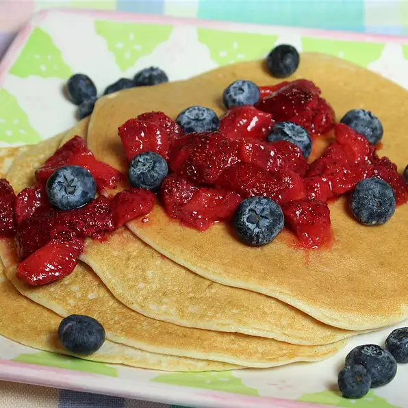

Gluten Free Protein Pancakes

Quick and easy recipe, but gives you a healthy and simple way to up your protein intake.
It is great topped with berries.
Ingredients:
- 1/2 cup cottage cheese
- 1/2 cup oats
- 7 egg whites
- 1 drop vanilla extract
- 1 serving cooking spray
Steps:
- Blend cottage cheese, oats, egg whites, and vanilla extract together in a blender until smooth.
- Spray a griddle or skillet with cooking spray and place over medium heat.
- Drop batter by large spoonfuls onto the griddle and cook until bubbles form and the edges are dry, 3 to 4 minutes.
- Flip and cook until browned on the other side, 2 to 3 minutes. Repeat with remaining batter.
Back to Recipes